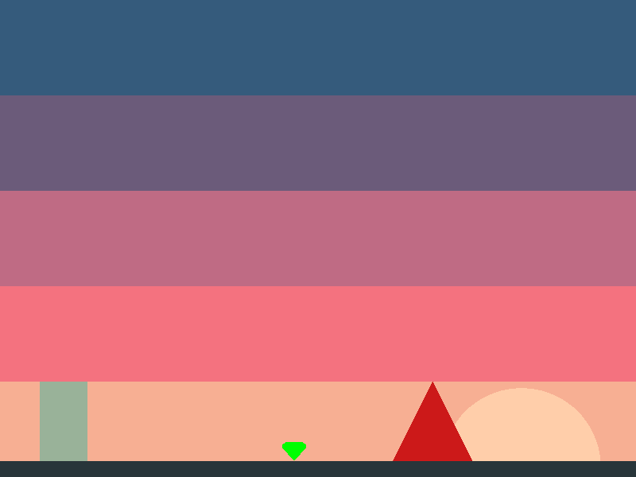

Binary and bitmasks
In 2.10 - Collision callbacks we saw how to react to entities colliding. In this section we're going to discuss how we can better control when collisions happen. As the title suggests, this will involve understanding some binary.
Let's say we have a beat-em-up game where two players are fighting bad guys and we don't want players to collide with each other and instead only collide with enemies. The collision callback could look something like this:
local begin_contact_callback = function(fixture_a, fixture_b)
local entity_a_type = fixture_a:getUserData()
local entity_b_type = fixture_b:getUserData()
-- Check these aren't the same type of entity
if entity_a_type ~= entity_b_type then
-- Some code to handle the collision goes here...
end
end
But what if you had power-ups and you want players to collide with the power-ups but you don't want enemies touching the power-ups? Things can get complicated pretty quickly:
local begin_contact_callback = function(fixture_a, fixture_b)
local a = fixture_a:getUserData()
local b = fixture_b:getUserData()
if (a == 'powerup' and b == 'player') or (a == 'player' and b == 'powerup') then
-- Some power-up code...
-- Don't let power-ups collide with other entity types like bad guys
elseif a ~= b and a ~= 'powerup' and b~= 'powerup' then
-- Code to handle the rest of the collisions...
end
end
Let's find a better way!
Binary operations
Back in 1.0 - Programming basics we discussed operations– how to operate on strings with equality (==) checks, how to operate on numbers with arithmetic operations, and even how to perform boolean operations like and and or.
Binary numbers have their own operations, often called bitwise operations.
To perform binary operations, let's first look at how to represent binary numbers.
Typing a number like 101, Lua will interpret it as a decimal number (literally one-hundred one) so we need to represent it as a string and convert it to a number.
To convert a string to a number, you pass in the number and the base (base-2 in this case) like so:
print(tonumber('101', 2))
Which converts the binary number 101 to decimal when it prints out:
5
For counting in binary and learning how to read and convert between binary and decimal, there are many resources that already explain it in much better. Learning how to do the conversions isn't necessary to learning these basic binary operations, but is an essential skill to have in the field of computer science.
Moving on, let's take a look at some of the basic operations.
AND
Binary numbers are similar to booleans in that binary only has 1's and 0's.
The AND operator also works similarly to the boolean and.
You give it two digits and both must be 1 (true) for the output to be 1.
Unfortunately at the time of writing this the online REPL has an outdated version of Lua that doesn't support binary operations.
No worries, let's create a main.lua file and try it out using LÖVE.
To perform binary operations, the included 'bit' library must be loaded.
When required, it will return a table with many functions in it related to binary operations.
The first function we'll try, bit.band() performs a binary AND operation.
local bit = require('bit')
print(bit.band(0, 0))
print(bit.band(0, 1))
print(bit.band(1, 0))
print(bit.band(1, 1))
This will print to the debug console:
0
0
0
1
You can pass it the decimals 1 and 0 as those numbers are the same in binary and decimal.
The operation is not limited to two inputs:
print(bit.band(1, 0, 1))
You can also pass it multi-digit numbers:
print(bit.band(
tonumber('111', 2),
tonumber('101', 2)
))
Note that you need to always use tonumber() to convert your binary string to a number as the function always expects a decimal number.
Likewise the output will always be a decimal number:
5
Lay it out like an arithmetic table and you can solve it just as easily:
111
101
---
101 --> 5
11011010
10111100
--------
10011000 --> 152
OR
Like with the boolean or, the binary OR output will be 1 if either the first or the second number is 1.
You could say it is the least picky operator in that it doesn't care as long as it gets a 1 somewhere at least once.
-- main.lua
local bit = require('bit')
print(bit.bor(1, 1))
print(bit.bor(1, 0))
print(bit.bor(0, 0))
print(bit.bor(0, 0, 0, 1, 0))
1
1
0
1
XOR
Xor (exclusive or), returns 1 only when it gets one 1. Let's compare XOR in a table to the others:
AND
| input A | input B | output |
|---|---|---|
| 0 | 0 | 0 |
| 0 | 1 | 0 |
| 1 | 0 | 0 |
| 1 | 1 | 1 |
OR
| input A | input B | output |
|---|---|---|
| 0 | 0 | 0 |
| 0 | 1 | 1 |
| 1 | 0 | 1 |
| 1 | 1 | 1 |
XOR
| input A | input B | output |
|---|---|---|
| 0 | 0 | 0 |
| 0 | 1 | 1 |
| 1 | 0 | 1 |
| 1 | 1 | 0 |
Binary operations are some of the most fundamental computer operations and can be physically built with a few transistors. Given the simplicity of these operations, it also makes for a fast method of calculating collisions.
Bitmasks

Let's take a look at this scene for a moment and identify from the crudely drawn shapes some potential entities:

All these entities fall into unique categories in that we want each of them to collide with certain other entities. If this were a game, we'd define each category with a unique binary digit, or bit, so let's first do that:
| entity | category |
|---|---|
| sun | 0000 |
| player | 0001 |
| powerup | 0010 |
| enemy | 0100 |
| ground | 1000 |
Let's set some rules for each of these entities. For instance, we want the player to collide with the powerup (0010), enemy (0100), and of course the ground (1000). To tell the game engine this, we create a bitmask for the fixture. This is a binary number with all the bits switched on that we want the entity to collide with. In other words, the player's bitmask would be (1110). We left the first bit blank so that the player can't collide with other potential players (player 2). Let's update the table with the bitmask we want each entity to have:
| entity | category | bitmask |
|---|---|---|
| sun | 0000 | 0000 |
| player | 0001 | 1110 |
| powerup | 0010 | 1001 |
| enemy | 0100 | 1001 |
| ground | 1000 | 1111 |
So how does it all come together and work? When two entity's fixtures contact, a binary AND operation is performed again the entity's bitmask and the other entity's category. If the resulting number isn't 0000 then we have a collision. Take the player and enemy for instance:
0001 player's category
1001 enemy's bitmask
----
0001 we have a collision
And how about the enemy and the powerup:
0100 enemy's category
1001 powerup's bitmask
----
0000 we have NO collision
Armed with this knowledge, we can assert the following information from the table above:
- The sun collides with nothing (and doesn't even get a category). It's just in the background and non-interactive.
- The player collides with everything except other players (and of course the sun).
- The powerup collides only with the ground and players.
- The enemy collides only with the ground and players.
- The ground collides with everything.
Go into the code folder and run the "collision" game:
https://github.com/RVAGameJams/learn2love/tree/master/code/collision
Do the entities interact as expected? Take a look inside the entities folder to see the particular function being called to accomplish apply the categories and bitmasks to each entity– Fixture:setFilterData
-- square.lua
...
square.category = tonumber('0001', 2)
square.mask = tonumber('1110', 2)
square.group = 0
...
square.fixture:setFilterData(square.category, square.mask, square.group)
The examples above only use 4 bits for the category and mask bceause that's all we needed, however LÖVE supports up to 16 bits for the category and bitmask (0000000000000000).
The group property isn't used and should be set to 0 when it isn't.
We haven't mentioned groups before because if you know how to use categories and bitmasks then you don't need to use groups as categories and bitmasks offer a more powerful way of doing the same thing.
That being said, collision groups should be relatively straight-forward to learn about so it will be left up as an exercise to read and study.
Exercises
- Play with the bitmasks. Can you make the enemy collide with the powerup instead of the player?
- Take a look at how groups work as described in Fixture:setGroupIndex. How can you create collision rules using groups instead of setting the bitmask and category? What are the advantages of each method?